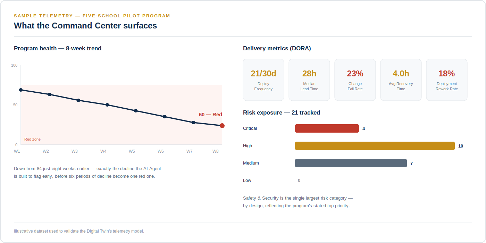

Real projects, real architecture decisions.
Enterprise AI Agentic architecture, including AI Agents implementation.
The Project Operations Digital Twin is an application that models a real multi-phase, digital transformation program and converts its raw engineering activity into governed, AI-assisted decision support. It fuses two data disciplines that are usually reported separately — traditional project management (schedule, cost, risk, milestones) and DORA software delivery metrics (deploy frequency, lead time, change fail rate, recovery time, rework rate) — into a single Command Center, then uses an AI Agent to correlate signals across both and surface what a program manager should investigate next.
The application is deliberately built around one non-negotiable principle: the AI Agent analyzes, but never decides. Every AI call is a single, stateless request — no tools, no autonomous loop, no memory of previous runs — and every response is stored as a labeled, timestamped, advisory artifact that a human reviews before any action is taken. This is not a limitation of the build; it is the architecture's central design commitment.
AI provides the analysis. The person owns the decision.

Proprietary to Deeb Haddad, © 2026. All rights reserved.
A consistent approach shows up across every engagement, regardless of industry or scale:
Scope, governance, and success criteria established before execution begins — not technology in search of a problem.
Predictive planning for infrastructure and compliance, combined with Agile execution for configuration and features.
Structured engagement across diverse, often competing stakeholder groups, with continuous feedback loops.
Every platform designed for future expansion — cloud-native foundations, modular integrations, governance built to scale.
Modernize customer banking services, improve operational efficiency, and establish a secure, cloud-native foundation for AI-powered fintech innovation — within a regulated financial environment.
Defined the business case, governance model, and success criteria. Built the project plan, architecture, and roadmap. Led cross-functional teams delivering AI capabilities, secure APIs, and digital banking services using a hybrid predictive-Agile delivery model.
A secure, scalable AI-powered banking platform improving customer experience and operational efficiency, with a foundation built for future fintech expansion.
Multiple schools operated with fragmented academic and administrative systems and limited digital learning infrastructure, needing a unified, secure, cloud-based platform.
Developed the governance framework and full project management plan. Engaged executive, academic, IT, vendor, teacher, student, and parent stakeholders. Applied a hybrid methodology — predictive for infrastructure and security, Agile for configuration and feature delivery.
Successful pilot completion with improved process standardization and data visibility, establishing a controlled feedback loop ahead of full rollout.
Startup performance data was siloed and difficult to analyze. A centralized, secure platform was needed to collect, analyze, and act on performance metrics.
Aligned platform customization with strategic objectives, defined privacy and security requirements for sensitive data, coordinated distributed teams, and managed schedule, cost, and quality validation using a hybrid methodology.
A centralized environment for data collection and analysis, enabling more data-driven insight and improved visibility into performance.
Enterprise data lived scattered across platforms like SAP, ERP, and CRM systems — reliable for transactions, difficult to turn into something AI could act on.
Built data pipelines connecting multiple platforms and databases, with automated data cleaning and quality audit checks at every stage before anything reaches the intelligence layer. An Enterprise Agentic model and a RAG (Retrieval-Augmented Generation) layer work together on top — AI agents that reason over grounded, verified data instead of raw, unchecked feeds.
A trusted data intelligence layer connecting enterprise systems end to end — clean, audited data flowing through to AI agents built to be trusted with it.